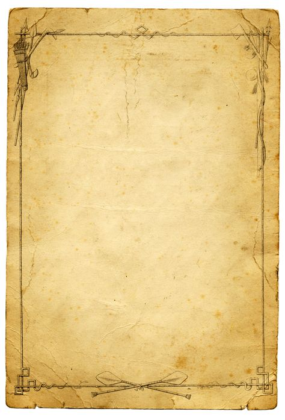

Super Mom
Mom,you're a wonderful mother, So
gentle, yet so strong.
The many ways you show you care
Always make me feel I belong.
You're patient when I'm foolish;
You give guidance when I ask;
It seems you can do most anything;
You're the master of every task.
You're a dependable source of comfort;
You're my cushion when I fall.
You help in times of trouble;
You support me whenever I call.
I love you more than you know;
You have my total respect.
If I had my choice of mothers,
You'd be the one I'd select!
--By Joanna Fuchs